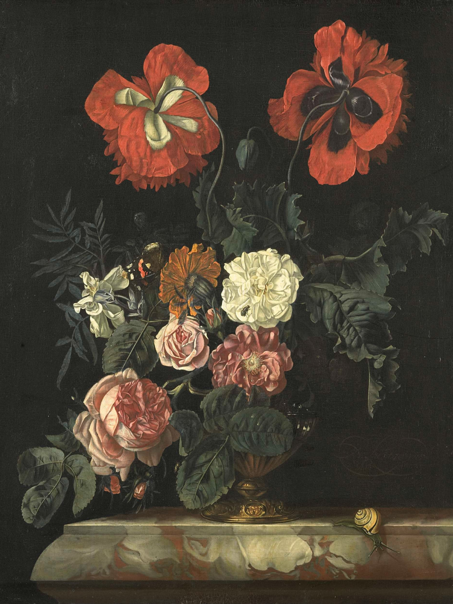

Fine art curator, living and working in Berlin, Germany
Vase with Flowers. Circa 1700. Institution: Mauritshuis
Cat with kittens. Date: 1844. Institution: Rijksmuseum
Still Life with Flowers and Fruit. Date: 1728. Institution:
Rijksmuseum

Still Life with Flowers. Date: 1718. Institution: Rijksmuseum